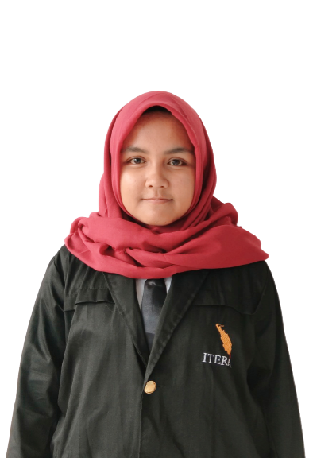
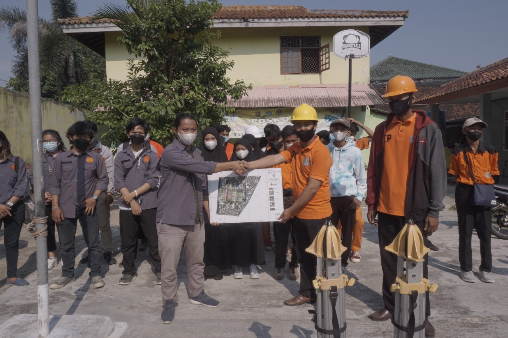
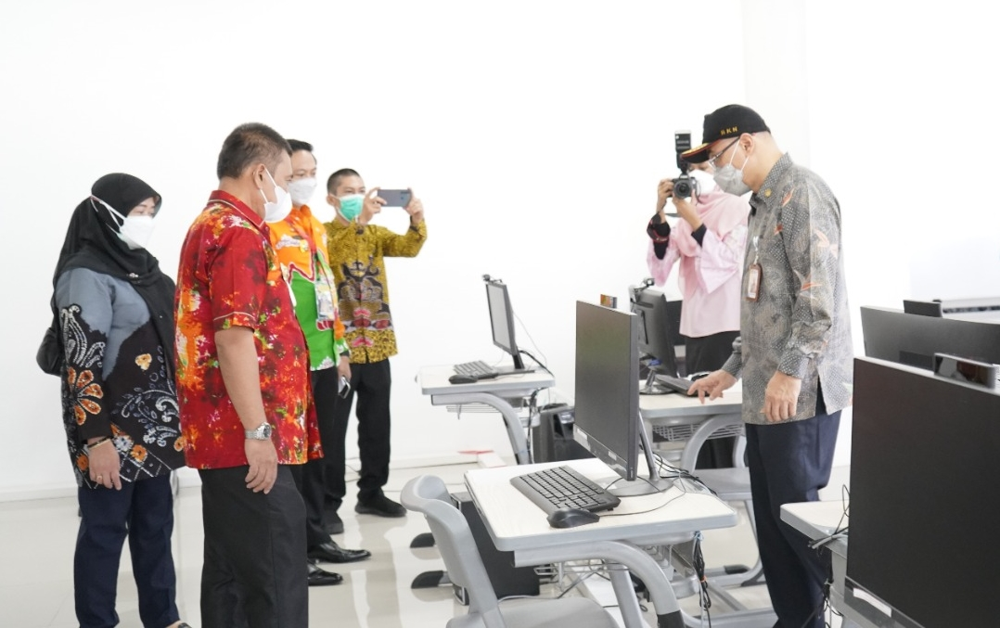

Biodata Diri
| DATA DIRI | KETERANGAN | FOTO |
| Nama Lengkap | Fahriza Yusefa |  |
| Tempat/Tanggal Lahir | Bukittinggi, 22 November 2000 | |
| Alamat | Way Kandis, Bandar Lampung | |
| Pekerjaan | Mahasiswa | |
| Agama | Islam | |
| Jenis Kelamin | Perempuan |
BERITA ITERA

Mahasiswa Geomatika ITERA Beri Pelatihan Drone Pada Siswa SMK
ITERA NEWS. Himpunan Mahasiswa Geomatika Institut Teknologi Sumatera (HMG ITERA) melalui kegiatan Geomatics Goes To
SELENGKAPNYA
Kepala BKN Pusat Apresiasi Kolaborasi Pemprov Lampung dan ITERA Selenggarakan Tes CPNS
ITERA NEWS. Pelaksana Tugas (Plt) Kepala Badan Kepegawaian Negara (BKN) Pusat Dr. Ir. Bima Haria
SELENGKAPNYA
Rumah Ibadah Multiagama ITERA Simbol Toleransi di Kampus
ITERA NEWS. Rumah Ibadah Multiagama (Rima) Institut Teknologi Sumatera (ITERA) telah diresmikan bertepatan dengan Dies
SELENGKAPNYA